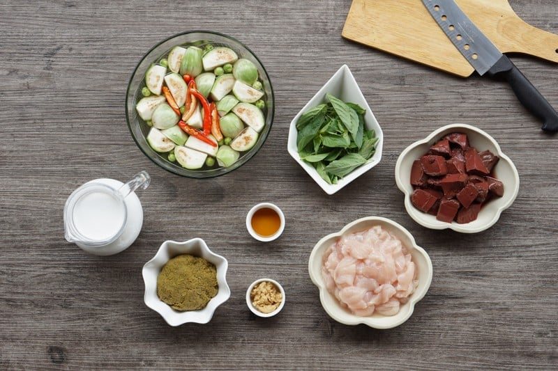
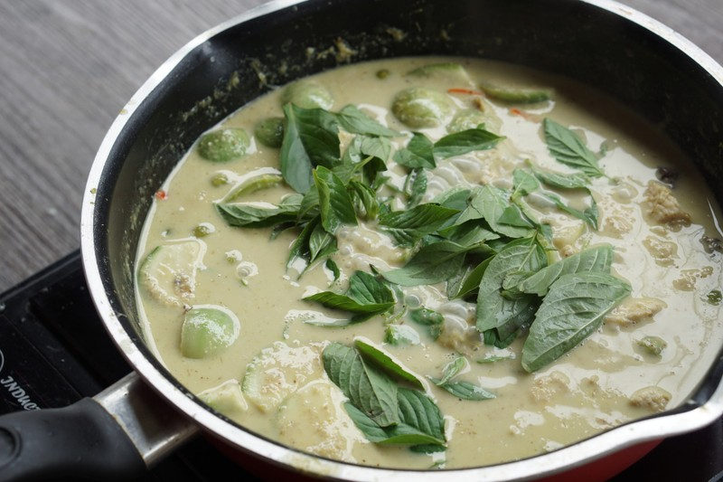

แกงเขียวหวานอกไก่
300 Kcal/เสิร์ฟ
"แกงเขียวหวานอกไก่" ฉบับคลีนทำไม่ยากเลยค่ะ แค่เราเปลี่ยนจากกะทิ มาใช้นมขาดมันเนยแทน และใช้เครื่องปรุงรส ที่ลดโซเดียมลงค่ะ ส่วนรสชาติ ก็ไม่ผิดเพี้ยนไปมากนะคะ ยังคงความอร่อยอยู่จ้า ยิ่งทานคู่กับขนมจีน โอ๊ยยยฟินนนแน่นอนค่า
วิธีทำ เมนู "แกงเขียวหวานอกไก่" เมนูอาหารคลีน ฟินได้แม้ไขมันน้อย!
วัตถุดิบ
1. อกไก่ 450 กรัม2. เลือดไก่ 1 ก้อน
3. มะเขือเปราะ 400 กรัม
4. มะเขือพวง 300 กรัม
5. โหระพา 200 กรัม
6. นมสดขาดมันเนย 500 มิลลิลิตร
7. พริกชี้ฟ้า 5 เม็ด
8. พริกแกงเขียวหวานออร์แกนิก 2 1/2 ช้อนโต๊ะ
9. น้ำตาลมะพร้าว 1 ช้อนโต๊ะ
10. น้ำปลา Low Sodium 1 1/2 ช้อนโต๊ะ
วิธีทำ
STEP 1 : เตรียมเครื่องแกง
- นำมะเขือเปาะ มะเขือพวง โหระพา พริกชี้ฟ้า ล้างทำความสะอาดเตรียมไว้ค่ะTip... เมื่อเราหั่นมะเขือเปราะเป็นสี่ส่วนแล้ว ให้นำแช่ในน้ำ ใส่เกลือเล็กน้อยเพื่อไม่ให้มะเขือดำนะคะ มะเขือพวง ควรบุบเล็กน้อยเพื่อให้น้ำแกงเข้าถึงเนื้อมะเขือได้ง่ายขึ้นค่ะ
STEP 2 : ลงมือแกงเลยจ้า
- นำอกไก่ลอกหนัง และเลือดไก่ ล้างทำความสะอาด เสร็จแล้วนำเนื้ออกไก่ และเลือดไก่มาหั่นเป็นชิ้นพอดีคำค่ะ ไม่หนาจนเกินไป- ตั้งกระทะ ไฟกลางค่ะ นำนมขาดมันเนยใส่ลงไปค่ะแบ่งใส่นะคะ อย่าเพิ่งใส่ครั้งแรกหมดค่ะ ตามด้วยพริกแกงเขียวหวานออร์แกนิก ผัดให้เข้ากัน รอจนพริกแกงหอมค่ะ
- ค่อย ๆ เติมนมขาดมันเนยลงไปทีละนิดค่ะ รอจนเข้ากันกับเครื่องแกง แล้วค่อยใส่อกไก่ลงไปค่ะ
- ผัดจนอกไก่สุกค่ะ เติมนมขาดมันเนยลงไปอีกจนหมดเลยค่ะรอบนี้ เสร็จแล้วทิ้งไว้สักครู่นะคะ
- หลังจากนั้น นำมะเขือเปราะ มะเขือพวง พริกชี้ฟ้า ใส่ตามลงไปเลยค่ะ หมั่นคนให้มะเขือจมน้ำแกงนะคะ มะเขือจะได้ไม่ดำค่ะ
- รอจนมะเขือสุกดีแล้ว ถึงจะใส่เลือดไก่ตามลงไปค่ะ
ผัดจนสุกแล้วเติมนมขาดมันเนยลงไป ใส่ผักตามลงไป
STEP 3 : ปรุงรส
-ปรุงรสด้วยน้ำตาลมะพร้าว น้ำปลา Low Sodium แล้วคนให้เข้ากันดีค่ะ-เสร็จแล้วใส่ใบโหระพาเป็นขั้นตอนสุดท้ายเลยค่ะ คนให้ทั่ว ปิดไฟ ยกลงจากเตาได้เลยค่ะ

ใสใบโหระพา
STEP 4 : จัดเสิร์ฟ
- ตักเสิร์ฟใส่ชาม ตกแต่งให้สวยงามด้วยใบโหระพา พริกชี้ฟ้า แค่นี้ก็น่าทานสุด ๆ กันไปเลยจ้า